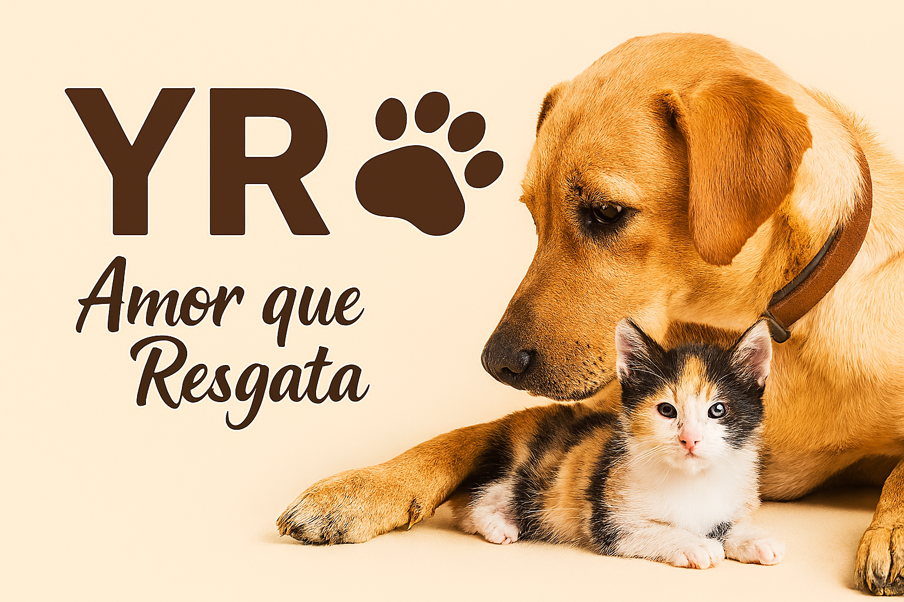

Projeto Resgate e Reabilitação
Resgata animais em situação de abandono ou maus-tratos, oferecendo cuidados veterinários, abrigo e preparo para adoção responsável.
- Equipe de voluntários treinada
- Parceria com clínicas veterinárias
- Mais de 500 animais resgatados por ano
Projeto Educação e Conscientização
Promove palestras e campanhas sobre guarda responsável, adoção e respeito aos animais em escolas e comunidades locais.
- Atuação em escolas públicas e privadas
- Distribuição de material educativo
- Parcerias com órgãos municipais
Seja um voluntário!
Quer fazer parte dessa transformação? A YR está sempre em busca de corações dispostos a ajudar.
- Cuidar dos animais no abrigo
- Ajudar em eventos de adoção
- Apoiar nas redes sociais e divulgação
- Contribuir com transporte e lar temporário
Envie um e-mail para voluntarios@yradocao.org ou fale conosco pelas redes sociais.
Você pode ajudar:
- Doe ração, medicamentos ou itens de limpeza
- Contribua financeiramente via Pix ou transferência
- Compartilhe nossos posts e histórias
- Seja um padrinho de um animal resgatado